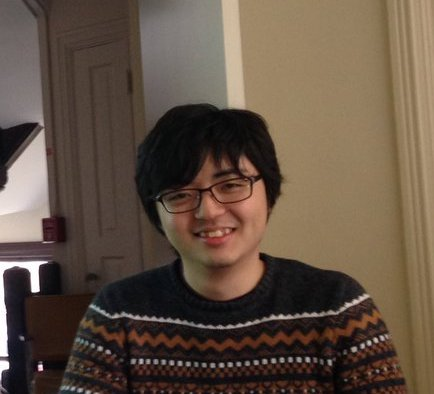

 I am a post-doctoral researcher working with Tamar Gollan and Victor Ferreira at the University of California, San Diego. I study how people assemble sentence structures in speaking and understanding using their knowledge of language. Before UCSD, I did my Ph.D. in Linguistics at the University of Maryland with Colin Phillips and Robert Slevc. Before that, I did a B.S. in Psychology and B.A. in Linguistics at the University of Washington, Seattle, where I worked in Lee Osterhout's Cognitive Neuroscience of language lab.
Understanding and speaking our native language seem effortless, but they actually involve complex, mostly unconscious cognitive processes. One of such cognitive processes is parsing in understanding and generation in speaking, the process of building mental representations of sentence structures necessary for systematic interpretation and grammatical production. Historically, parsing and generation are studied largely independently in psycholinguistics, perhaps because they look superficially distinct. As a consequence psycholinguists have two largely unrelated models of structural processes in comprehension and production. My research aims to unify them to the extent possible. The goal is to build an explicit theory of a single syntactic structure-building mechanism that works for comprehension and production. This attempt has led me to study various aspects of cognition, including syntactic and semantic processes, prediction, planning, long-term memory, working memory, using multiple languages (English, Japanese) and methodologies (EEG, novel and existing behavioral methods).
Specific topics of interests
Syntax: Argument structure; Long-distance dependency; Syntactic category; Tree-Adjoining Grammar
Comprehension: Predictive process; Processing of islands; Lexical access in context
Production: Planning process; Long-distance dependency planning; Verb planning; Relative clause planning
2/7 Colloquium talk at the University of Massachusetts, Amherst, Department of linguistics
2/14 Colloquium talk at the University of Toronto, Department of linguistics
2/26 Colloquium talk at the University of Delaware, Department of linguistics
3/29-3/31 Talk at the 32nd CUNY Conference on Human Sentence Processing